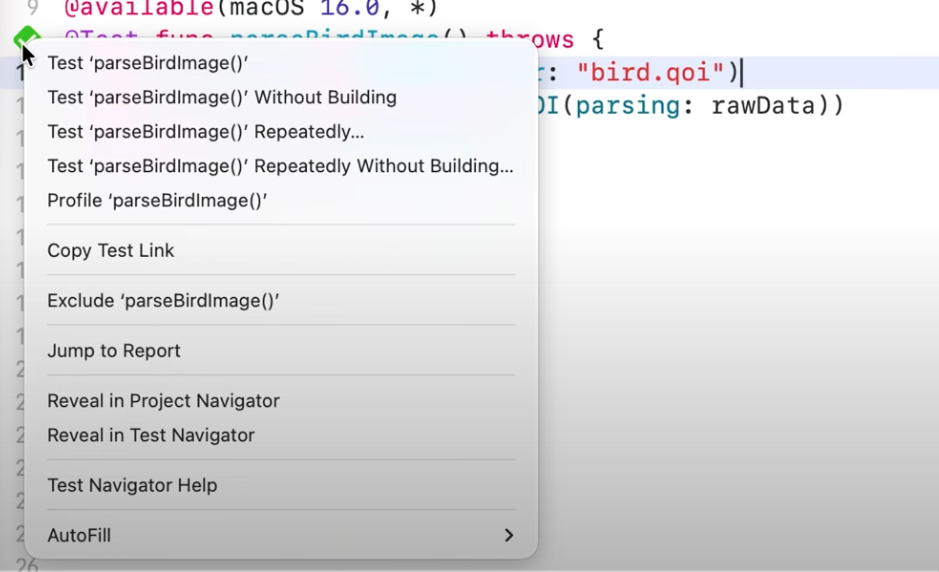

[WWDC25] Swift 성능 최적화의 시작-1) Instruments로 코드 병목 찾기
- https://www.youtube.com/watch?v=LzBZjwEY9as&list=TLGGzZB-ElPYOYAyMDA3MjAyNQ
- https://github.com/apple/swift-binary-parsing
iOS 애플리케이션의 성능은 사용자 경험에 직접적인 영향을 미치며, 특히 이미지 처리와 같은 데이터 집약적인 작업에서는 최적화가 필수적이다. 본 블로그 시리즈의 첫 번째 편에서는 Apple의 강력한 성능 분석 도구인 Instruments를 활용하여 Swift 코드의 초기 병목 현상을 식별하고 성능 개선을 달성하는 과정을 상세히 다룬다.
1. 문제 제기: 느린 이미지 로딩과 사용자 경험 저하
WWDC영상에서 새롭게 개발한 QOI 이미지 파서 앱에서 작은 아이콘 파일은 즉시 로드되지만, 고해상도 이미지와 같은 큰 파일은 로딩에 수 초가 소요되는 문제가 발생했다. 이러한 속도 저하는 종종 알고리즘 또는 데이터 구조의 비효율적인 사용을 시사한다.
이 문제를 진단하고 해결하기 위해 Instruments를 활용하여 코드의 병목 현상을 분석한다.
2. Instruments: 성능 분석의 시작점
Instruments는 Xcode에 통합된 Apple의 프로파일링 도구이다. 이 도구는 애플리케이션이 시간을 어디에 소비하는지, 메모리를 어떻게 할당하는지 등을 시각적으로 파악할 수 있도록 지원한다.
A. 테스트 프로파일링 설정
성능 분석의 효율성을 위해 앱 전체를 프로파일링하는 대신, 분석 대상 코드에 대한 테스트(Test)를 생성하여 해당 부분만 프로파일링하는 것이 권장된다.
- Xcode에서 성능을 분석하고자 하는 특정 코드에 대한 테스트를 생성한다.
-
테스트 실행 버튼을 보조 클릭(우클릭)하여 ‘Profile Test’ 옵션을 선택한다.

- Instruments가 실행되면, ‘Blank’ 템플릿을 선택한다.
- 좌측 상단의 ‘+’ 버튼을 클릭하여 두 가지 핵심 Instrument를 추가한다:
- Time Profiler: 애플리케이션이 시간을 어디에 소비하는지 파악하는 데 유용하다.
- Allocations: 메모리 할당 패턴을 이해하는 데 도움을 준다.

3. Time Profiler로 코드 병목 찾기: platform_memmove의 진실
Instruments에서 녹화(Record) 버튼을 눌러 테스트를 실행한다. 결과 창에서 다양한 정보가 표시되는데, 이 중 Time Profiler 결과에 집중하여 분석을 시작한다.
A. Call Tree 분석
- 하단 디테일 뷰에서 ‘Call Tree’ 버튼을 클릭한 후, ‘Invert Call Tree‘를 선택한다. 이 설정은 CPU 사용량이 가장 빈번하게 캡처된 호출을 상단에 표시하여 병목을 신속하게 식별할 수 있도록 한다.
B. 불꽃 그래프(Flame Graph) 시각화
- 디테일 뷰 상단의 버튼을 클릭하여 결과를 불꽃 그래프(Flame Graph)로 시각화한다.

- 그래프에서 “platform_memmove”라는 거대한 막대가 프로세스를 지배하고 있는 것을 확인할 수 있다.
platform_memmove는 데이터를 복사하는 저수준 시스템 호출이며, 이 거대한 막대는 파서가 데이터를 읽는 대신 대부분의 시간을 데이터 복사에 소비하고 있음을 나타낸다.
C. 문제의 코드 발견: readByte 메서드
platform_memmove스택 트레이스를 ‘show all frames’로 확장하여 보면, 시스템 호출 아래에 FoundationData타입의 특수화된 메서드들이 확인된다. 그 아래에 개발자가 정의한 메서드인readByte가 나타난다.- Instruments는
readByte메서드의 특정 라인(Data 초기화)이 모든 데이터 복사를 유발하고 있음을 지목한다.
// MARK: - 문제의 코드 발견: readByte 메서드
extension Data
// 초기 문제 발생 코드 (수정 전)
// 이 메서드는 매번 데이터를 복사하여 비효율적인 성능을 초래한다.
mutating func readByte() -> UInt8? {
guard !isEmpty else { return nil }
let value = self[0]
// 문제 발생 지점:
// 'Data(data.dropFirst())'를 통해 기존 데이터의 나머지 부분을
// '새로운 Data 인스턴스'로 통째로 복사한다.
// 이 과정이 데이터 크기에 비례하여 기하급수적으로 시간을 소비한다.
self = Data(self.dropFirst()) // <-- Instruments가 지목한 바로 그 라인
return value
}
// ... (다른 파싱 메서드들)
}
readByte의 본래 의도는 단순히 데이터의 첫 바이트를 반환하고 데이터의 시작점을 앞으로 이동시키는 것이었다. 그러나 실제로는 매번 바이트를 읽을 때마다 데이터의 전체 내용을 새로운 할당으로 복사하고 있었다.
4. 해결책: popFirst()를 활용한 선형 시간 복잡도 달성
Data 타입은 양쪽 끝에서 효율적으로 축소되도록 설계되었으며, 이를 위한 컬렉션 메서드인 popFirst()를 제공한다. popFirst()는 데이터의 첫 바이트를 반환한 다음, 컬렉션의 앞부분을 한 바이트씩 이동시켜 데이터를 효율적으로 축소한다.
A. 코드 수정
문제의 readByte 메서드를 popFirst()를 사용하도록 수정한다.
// MARK: - 4. 해결책: popFirst()를 활용한 선형 시간 복잡도 달성
// QOIParser 클래스 내의 readByte 메서드 수정 후 코드
// Data 타입의 popFirst() 메서드를 사용하여 효율적인 데이터 처리를 구현한다.
// 이 메서드는 내부적으로 데이터를 복사하지 않고, 컬렉션의 시작점만 이동시켜
// 상수 시간에 가까운 성능을 제공한다.
mutating func readByte() -> UInt8? {
guard !isEmpty else { return nil }
return data.popFirst()
}
B. 성능 개선 결과
코드를 수정한 후, 다시 프로파일링을 실행하면 개선된 결과를 확인할 수 있다.

불꽃 그래프에서 거대한 platform_memmove 막대가 사라진 것을 확인할 수 있다. 벤치마크 결과, 이 작은 변경 하나로 인해 파싱 성능이 비약적으로 향상되었다.
가장 중요한 점은, 원래 버전에서는 이미지 크기와 파싱 시간의 관계가 2차(quadratic)였지만, popFirst()로 수정한 후에는 이 관계가 선형(linear)으로 개선되었다는 점이다. 이는 이미지 크기가 커질수록 파싱 시간이 기하급수적으로 길어지던 문제가 해결되었음을 의미한다.

결론
본 편에서는 Instruments의 Time Profiler를 사용하여 코드의 숨겨진 병목 현상, 특히 불필요한 데이터 복사 문제를 식별하고, Data 타입의 popFirst() 메서드를 활용하여 알고리즘적 문제를 해결하는 방법을 살펴보았다. 이로써 파싱 성능을 2차 시간 복잡도에서 선형 시간 복잡도로 개선하는 극적인 결과를 얻었다.
다음 편에서는 “불필요한 메모리 할당 줄이기”에 초점을 맞춰, Instruments의 Allocations 도구를 사용하여 발생하는 과도한 할당을 진단하고 제거하여 추가적인 성능 개선을 이루는 방법을 탐구할 예정이다.